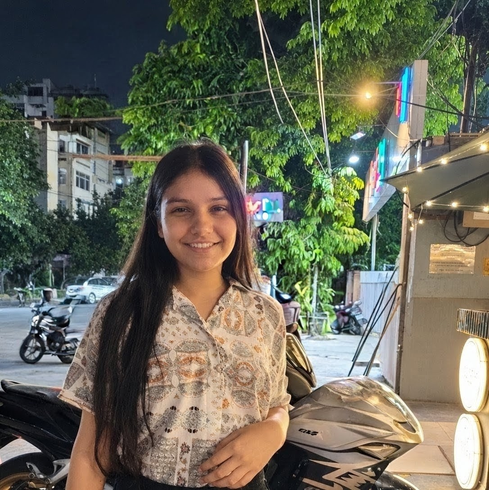

Calculator
A browser-based calculator for everyday arithmetic, with parentheses and clear and delete controls.
HTML · CSS · JavaScript
Open projectBCA STUDENT · WEB DEVELOPMENT
I’m studying BCA at Chhatrapati Shahu Ji Maharaj University in Kanpur and learning web development by building small projects. This portfolio brings together three projects I created during my CodSoft virtual web development internship: a calculator, a landing page, and a website to introduce myself and my work.

BCA Student · Web Development
A LITTLE ABOUT ME
I like learning by making something, then figuring out how to make it work better.
I’m a BCA student at Chhatrapati Shahu Ji Maharaj University. Web development lets me bring together the things I’m learning in class and see the result in a browser.
During my CodSoft internship, I made a calculator, a landing page, and this portfolio. They were early projects, but each one gave me a chance to practice writing HTML, styling a page with CSS, and using JavaScript where it was needed. I’m still learning, and I want this portfolio to reflect that honestly.
WHAT I’VE BEEN USING
My current toolkit includes the technologies I’ve used in my coursework and projects.
SELECTED WORK · CODSOFT INTERNSHIP
Three mini-projects built as part of my virtual web development internship.
A browser-based calculator for everyday arithmetic, with parentheses and clear and delete controls.
HTML · CSS · JavaScript
Open projectA personal website that introduces me and brings my background, skills, and internship work together.
HTML · CSS
You’re viewing itA structured landing page with dedicated sections for featured information, an introduction, and contact.
HTML · CSS
Currently being refined
MY ACADEMIC BACKGROUND
Chhatrapati Shahu Ji Maharaj University
Kanpur, India
GET IN TOUCH
I’m open to connecting about internships, learning opportunities, and web development projects.
riniverma1301@gmail.com